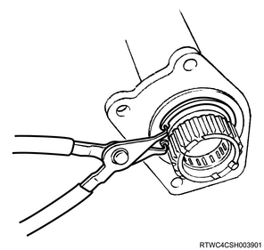
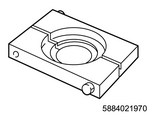
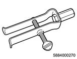

Shift on the fly system disassembly (All models)
1. Front axle differential oil drain
1. Drain the front axle differential oil from the front axle assembly.
Note
- Remove the filler plug and gasket to drain oil.
2. Drive shaft assembly removal
1. Remove the drive shaft from the axle case.
Note
- Loosen bolts that fasten the mounting bracket, and then remove the right side front axle drive shaft from the front axle case.
3. Actuator removal
1. Remove the actuator from the housing.
Note
- Loosen the mounting bolts to pull out the actuator from the housing.

4. Housing removal
1. Remove the housing from the axle case.
Note
- Loosen the mounting bolts to remove the housing from the axle case.
5. Sleeve removal
1. Remove the sleeve from the axle shaft.
6. Clutch gear removal
1. Remove the clatch gear from the axle shaft.
7. Inner axle shaft removal
1. Remove the inner axle shaft from the axle case.
Note
- Remove the snap ring from the front axle case using snap ring pliers.

Note
- Remove the snap ring from the inner axle shaft using snap ring pliers.
8. Inner shaft bearing removal
1. Remove the bearing from the inner shaft using special tool.
Note
- Remove the inner shaft bearing from the inner shaft.

SST: 5-8840-2197-0 - separator
9. Needle bearing removal
1. Remove the needle bearing from the inner shaft using special tool.
Note
- Remove using a remover and sliding hammer.

SST: 5-8840-0027-0 - remover

SST: 5-8840-0084-0 - sliding hammer
Caution
- Be careful not to damage the shaft.
10. Oil seal removal
1. Remove the oil seal from the axle case.
Caution
- Be careful not to damage the front axle case.